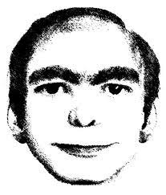
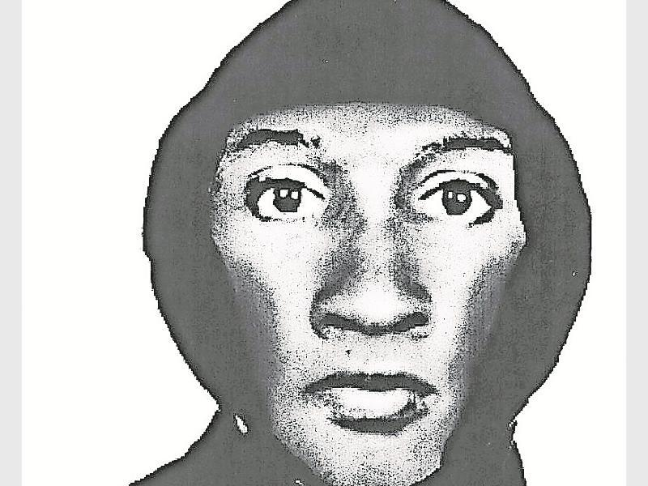

MR. EVIL
- Name: Dr. Finchley Nightingale
- Profession: Psychiatrist
- Age: 58
- Criminal Convictions: No Previous Criminal Record
- Height: 6.1ft
- Biography:
Nigel Rochdale

- Name: Nigel Rochdale
- Profession: Unemployed/No fixed Abode
- Age: 40
- Criminal Convictions: Previous Criminal Convictions; Theft, burglary and assault.
- Height: 5.2ft
- Biography: Nigel has not had an easy life. He came from a broken home where his father suffered from alcoholism and was inattentive to Nigel as a child – paired with his six other siblings, there simply wasn’t enough love to go around. His misbehaviour at a young age caused him to be excluded from school – which drastically reduced his prospects in later life. Nigel has a good and true soul at heart but has been unfairly treated in life and his worsening money issues led him to eventual homelessness. Nigel was seen on CCTV loitering outside a Tesco Express down the road from your house at 9:20pm and was seen wearing black hoodie and cargo trousers.
MASTER BIG

KNOWN TO SMOTHER HIS VICTIMS. UTTERLY DISPICABLE.
DR. MONSTROSITY
A FUGITIVE DOCTOR KNOWN TO EAT HIS VICTIMS APPENDAGES. SHOOT ON SITE.
MR. G%&7SK1v2*h

poawjekasd DELETE ME asidu-9a23